Tegn med babyen før ordene
Lær babytegn sammen med babyen: 150 tegn med tegning og trinn, en ukeplan med fem tegn og en dagbok for de første tegnene – uten nett.
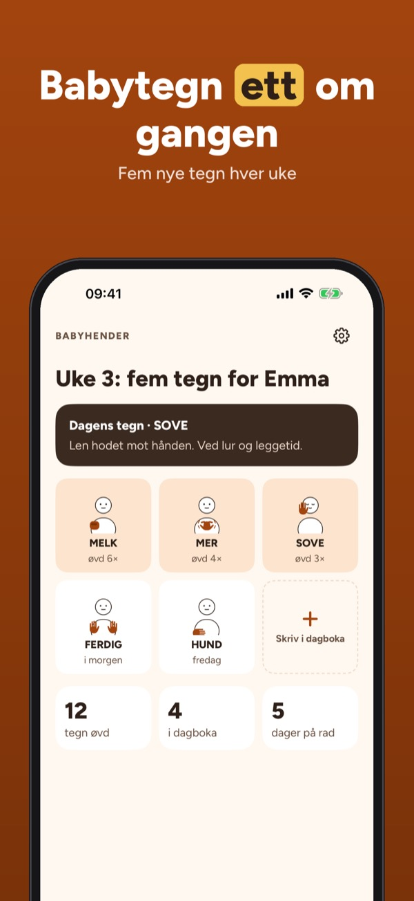
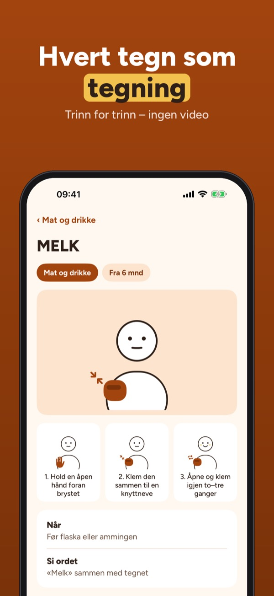
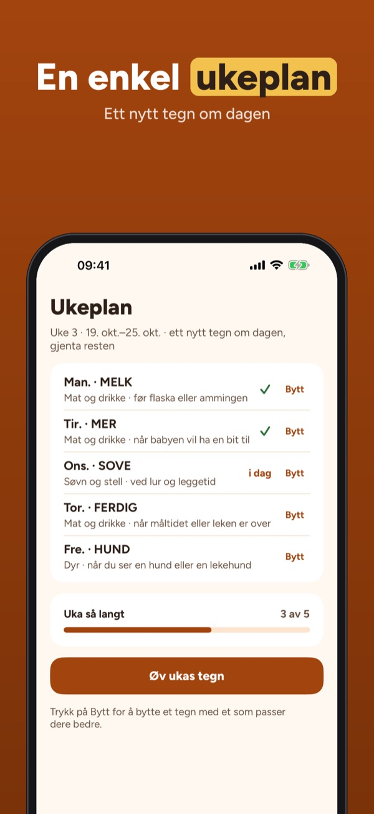
Babyhender hjelper deg å bruke enkle tegn sammen med babyen før ordene kommer – ett lite tegn om gangen, i hverdagen.
30 tegn i 3 kategorier, den første ukeplanen, dagboka og tipsene kan brukes uten kjøp. Fullversjonen er et engangskjøp som låser opp alle 150 tegn, nye ukeplaner, sanger, lek og fremgang. Ikke noe abonnement.
Tegnene er enkle hverdagsgester for babyer, tegnet av oss. Mange ligner tegn i norsk tegnspråk; appen lenker til Tegnordbok for det offisielle tegnet. Babyhender er uavhengig, ikke tilknyttet Statped eller Norges Døveforbund, og gir ikke medisinske råd.
Terms of Use (EULA): https://www.apple.com/legal/internet-services/itunes/dev/stdeula/
Privacy: https://baytechbv.github.io/privacy/babytegn-nordic/
Viittomia ennen sanoja
Viito vauvan kanssa: 150 viittomaa piirroksin ja vaihein, viikko-ohjelma viidellä viittomalla ja päiväkirja ensimmäisille viittomille – ilman nettiä.
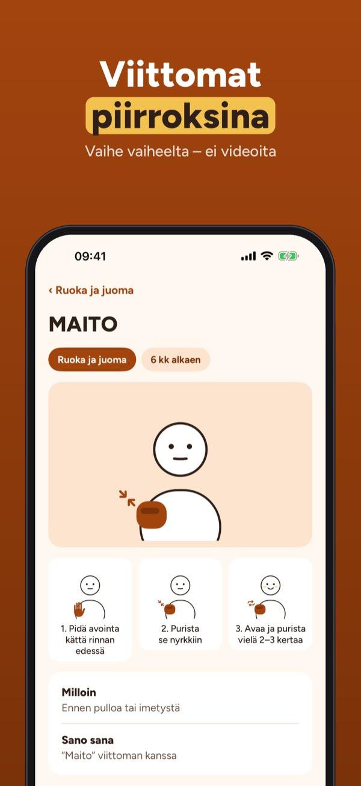
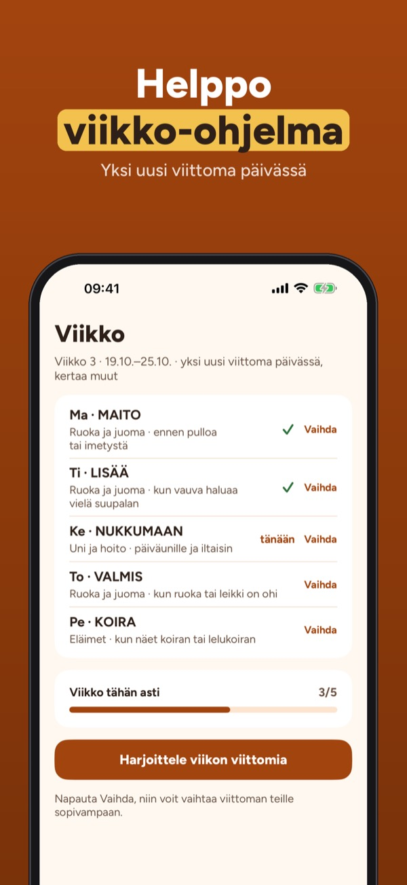
Babyhender auttaa käyttämään yksinkertaisia viittomia vauvan kanssa ennen sanoja – yksi pieni viittoma kerrallaan, arjessa.
30 viittomaa kolmesta aiheesta, ensimmäinen viikko-ohjelma, päiväkirja ja vinkit ovat käytössä ilman ostoa. Täysi versio on kertaosto, joka avaa kaikki 150 viittomaa, uudet ohjelmat, laulut, leikit ja edistymisen. Ei tilausta.
Viittomat ovat yksinkertaisia arjen eleitä vauvoille, itse piirrettyjä. Moni muistuttaa suomalaisen viittomakielen viittomia; sovellus linkittää Suvi-sanakirjaan virallista viittomaa varten. Babyhender on riippumaton, ei liity Kuurojen Liittoon eikä anna lääketieteellisiä neuvoja.
Terms of Use (EULA): https://www.apple.com/legal/internet-services/itunes/dev/stdeula/
Privacy: https://baytechbv.github.io/privacy/babytegn-nordic/
Gebaren voordat je baby praat
Gebaar samen met je baby: 150 gebaren met tekening en stappen, een weekplan met vijf gebaren en een dagboek voor de eerste gebaren – zonder internet.
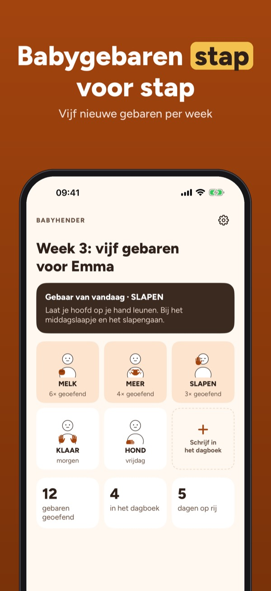
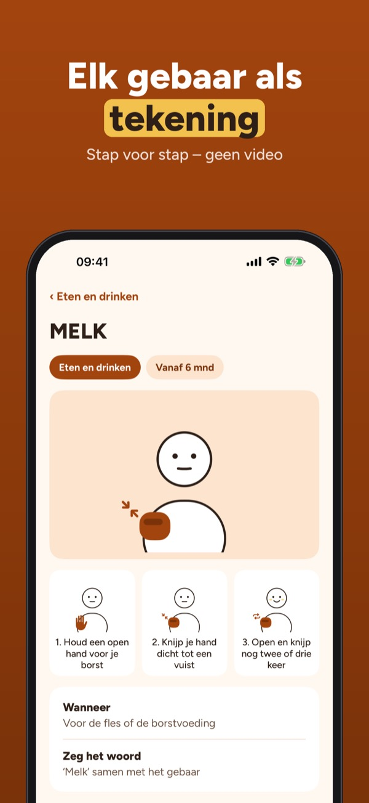
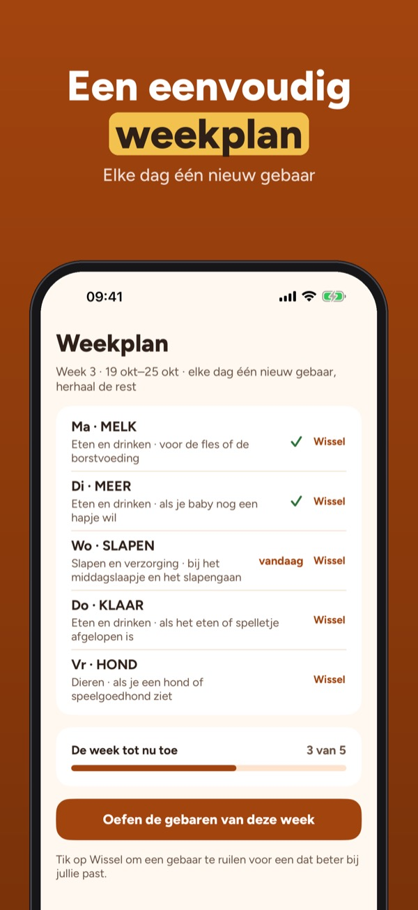
Babyhender helpt je om eenvoudige gebaren te gebruiken met je baby voordat de woordjes komen – één klein gebaar tegelijk, in het dagelijks leven.
30 gebaren in 3 thema’s, het eerste weekplan, het dagboek en de tips kun je zonder aankoop gebruiken. De volledige versie is een eenmalige aankoop voor alle 150 gebaren, nieuwe weekplannen, liedjes, spelletjes en voortgang. Geen abonnement.
De gebaren zijn eenvoudige, alledaagse gebaren voor baby’s, door ons getekend. Veel lijken op gebaren uit de Nederlandse Gebarentaal; de app linkt naar de Global Signbank voor het officiële gebaar. Babyhender is onafhankelijk, niet verbonden aan het Nederlands Gebarencentrum en geeft geen medisch advies.
Terms of Use (EULA): https://www.apple.com/legal/internet-services/itunes/dev/stdeula/
Privacy: https://baytechbv.github.io/privacy/babytegn-nordic/
Tecken med bebisen före orden
Teckna med din bebis: 150 tecken med teckning och steg, en veckoplan med fem tecken och en dagbok för de första tecknen – utan internet.
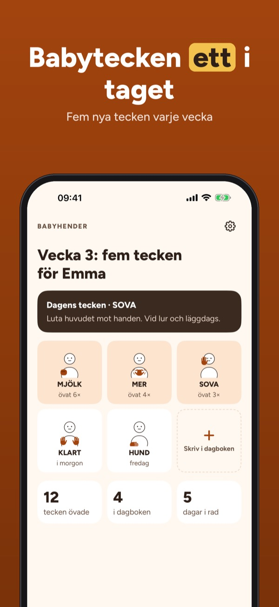
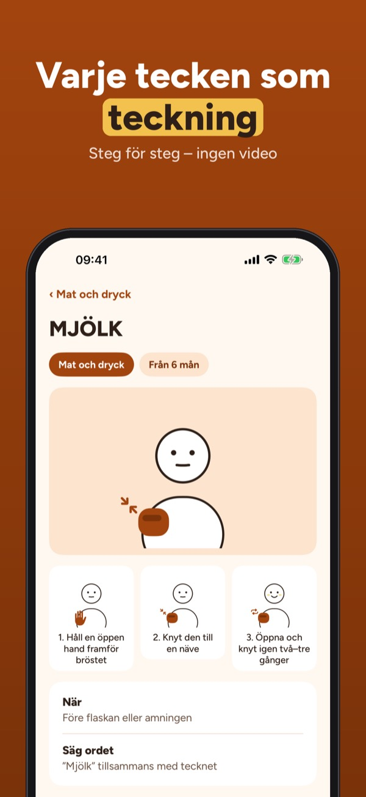
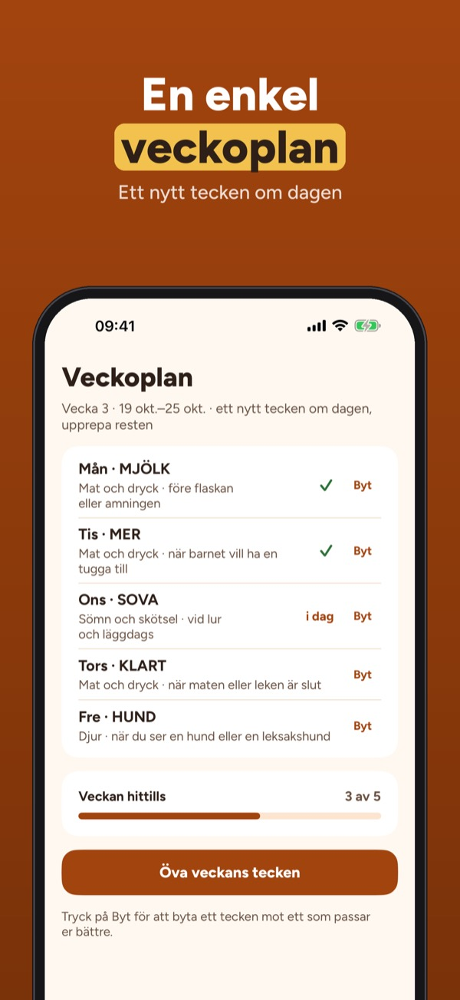
Babyhender hjälper dig att använda enkla tecken med bebisen innan orden kommer – ett litet tecken i taget, i vardagen.
30 tecken i 3 kategorier, den första veckoplanen, dagboken och tipsen kan användas utan köp. Fullversionen är ett engångsköp som låser upp alla 150 tecken, nya veckoplaner, sånger, lekar och framsteg. Ingen prenumeration.
Tecknen är enkla vardagsgester för bebisar, ritade av oss. Många liknar tecken i svenskt teckenspråk; appen länkar till Svenskt teckenspråkslexikon för det officiella tecknet. Babyhender är oberoende och ger inga medicinska råd.
Terms of Use (EULA): https://www.apple.com/legal/internet-services/itunes/dev/stdeula/
Privacy: https://baytechbv.github.io/privacy/babytegn-nordic/
Tegn med din baby før ordene
Lær babytegn sammen med din baby: 150 tegn med tegning og trin, en ugeplan med fem tegn og en dagbog over de første tegn – uden internet.
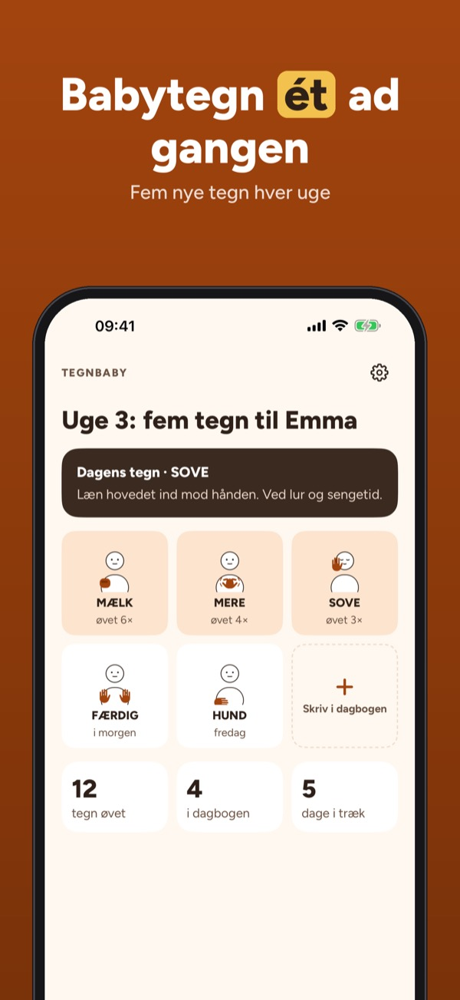
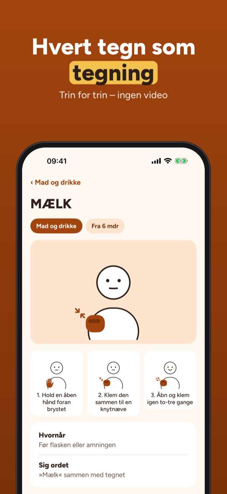
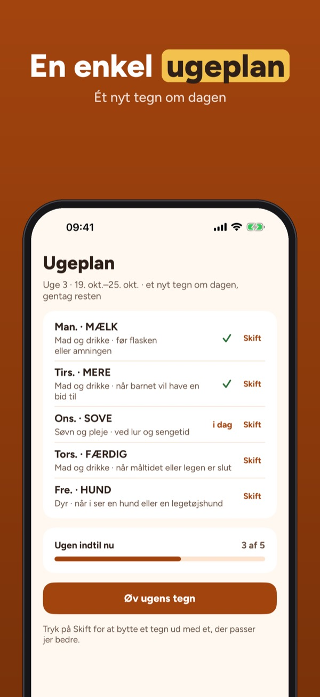
Tegnbaby hjælper dig med at bruge enkle tegn sammen med din baby, før ordene kommer – ét lille tegn ad gangen, i hverdagen.
30 tegn i 3 kategorier, den første ugeplan, dagbogen og tipsene kan bruges uden køb. Fuld version er et engangskøb, der låser alle 150 tegn, nye ugeplaner, sange, lege og fremgang op. Intet abonnement.
Tegnene er enkle hverdagsgestus for babyer, tegnet af os. Mange ligner tegn fra dansk tegnsprog; appen linker til Ordbog over Dansk Tegnsprog for det officielle tegn. Tegnbaby er uafhængig og giver ikke medicinske råd.
Terms of Use (EULA): https://www.apple.com/legal/internet-services/itunes/dev/stdeula/
Privacy: https://baytechbv.github.io/privacy/babytegn-nordic/
Gebärden für dein Baby
Gebärden mit deinem Baby: 150 Zeichen mit Zeichnung und Schritten, ein Wochenplan mit fünf Gebärden und ein Tagebuch für die ersten Zeichen – offline.
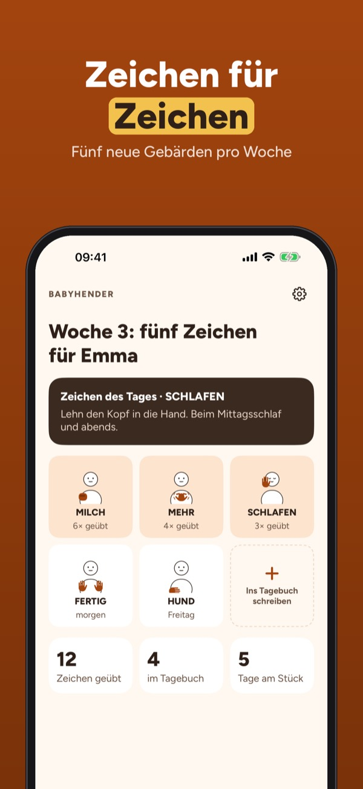
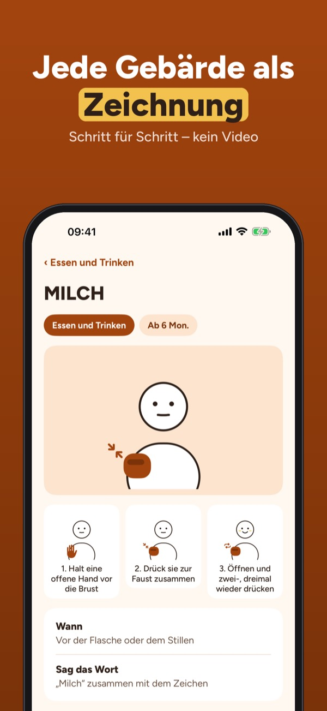
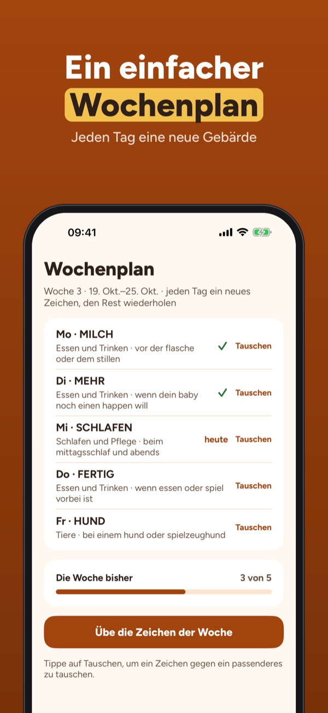
Babyhender hilft dir, einfache Gebärden mit deinem Baby zu nutzen, bevor die ersten Wörter kommen – eine kleine Gebärde nach der anderen, im Alltag.
30 Gebärden in 3 Themen, der erste Wochenplan, das Tagebuch und die Tipps sind ohne Kauf nutzbar. Die Vollversion ist ein Einmalkauf für alle 150 Gebärden, neue Wochenpläne, Lieder, Spiele und Fortschritt. Kein Abo.
Die Gebärden sind einfache Alltagsgesten für Babys, von uns gezeichnet. Viele ähneln Gebärden der Deutschen Gebärdensprache; die App verlinkt ein Gebärdenlexikon für die offizielle Gebärde. Babyhender ist unabhängig und gibt keine medizinischen Ratschläge.
Terms of Use (EULA): https://www.apple.com/legal/internet-services/itunes/dev/stdeula/
Privacy: https://baytechbv.github.io/privacy/babytegn-nordic/